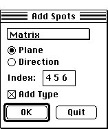

Distributed By: Virtual Labs
Add Spots Dialog Box
PATH...{Stereographic Projection Object}:Function Menu:Add a Spot...

Add Spots Dialog
The Add Spots Dialog allows the addition of plane or direction poles to
the stereographic projection. The poles that are added may be associated
with any of the four crystals. In addition, by clicking on the Add Type
check box, all poles of the given type will be added. Poles that are added
with this dialog box are automatically labeled.
Author: J.ames T.
Stanley
 Desktop
Manual:Dialog Boxes
Desktop
Manual:Dialog Boxes
Distributed By: Virtual Labs
Last Updated:1/12/96 Sat, Apr 27, 1996